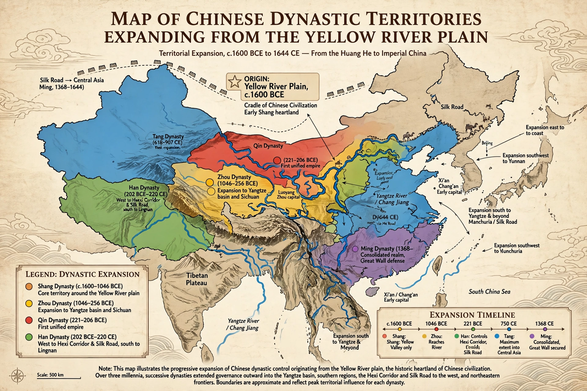

History of China

Scope: from Neolithic cultures to the present
Earliest writing: oracle bone script, c. 1250 BCE
First imperial unification: Qin dynasty, 221 BCE
Traditional dynastic cycle: Xia–Shang–Zhou … Qing
The history of China spans several millennia across a vast area of East Asia. Chinese civilization emerged along the Yellow and Yangtze rivers in the Neolithic, and written history begins with the Shang dynasty (c. 1600–1046 BCE). For most of the past two thousand years China was governed by a succession of imperial dynasties, punctuated by periods of division, and it was frequently the world's most populous and technologically advanced state.
Ancient and early imperial China
Tradition credits the semi-legendary Xia with the first dynasty, followed by the Shang — confirmed by oracle bone inscriptions — and the Zhou, whose long rule produced Confucius, Laozi and the Hundred Schools of Thought. The Warring States period ended when Qin Shi Huang unified China in 221 BCE, standardising script, weights and measures. The Han dynasty (206 BCE–220 CE) consolidated imperial rule, adopted Confucian ideology and opened the Silk Road.
Division and reunification
After Han fell, China divided into the Three Kingdoms and rival dynasties for nearly four centuries. The Sui reunified the empire in 589 and the Tang (618–907) presided over a cosmopolitan golden age centred on Chang'an, shattered by the An Lushan Rebellion. The Song (960–1279) saw commercial revolution, printing, paper money and Neo-Confucian philosophy under thinkers such as Zhu Xi, even as northern China fell to the Jin and then the Mongols.
Late imperial China
The Mongol Yuan dynasty (1271–1368) ruled all China before the Ming (1368–1644) restored native rule, building much of the Great Wall and the Forbidden City. The Manchu Qing (1644–1912) expanded the empire to its greatest extent under Kangxi and Qianlong, but declined amid population pressure, the Opium Wars, the Taiping Rebellion and foreign encroachment.
Modern China
The Xinhai Revolution ended imperial rule in 1912; Sun Yat-sen became provisional president of the Republic of China, whose last emperor, Puyi, abdicated as a child. Warlordism, war with Japan (1937–45) and civil war followed, ending with the founding of the People's Republic of China in 1949 under Mao Zedong, while the Republic retreated to Taiwan. Since 1978, reform and opening under Deng Xiaoping and his successors have made China the world's second-largest economy and a central power in global affairs.
See also: Qin dynasty · Han dynasty · Tang dynasty · Qing dynasty